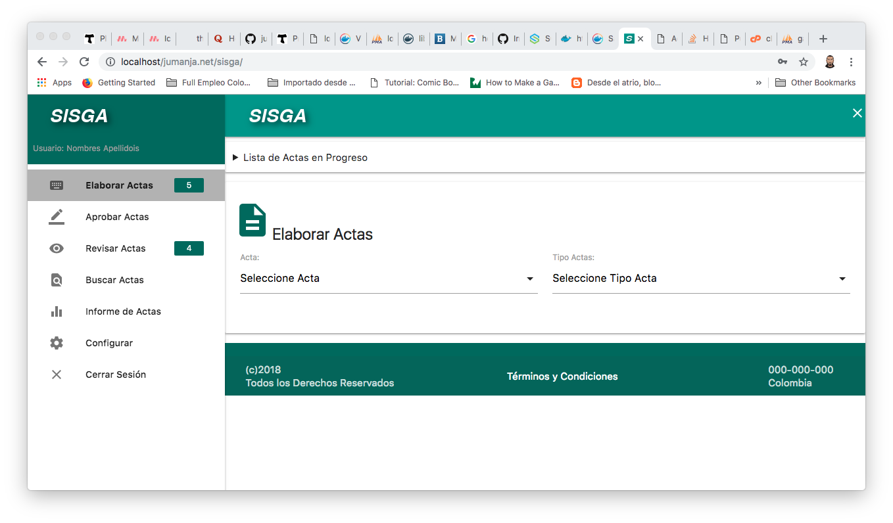
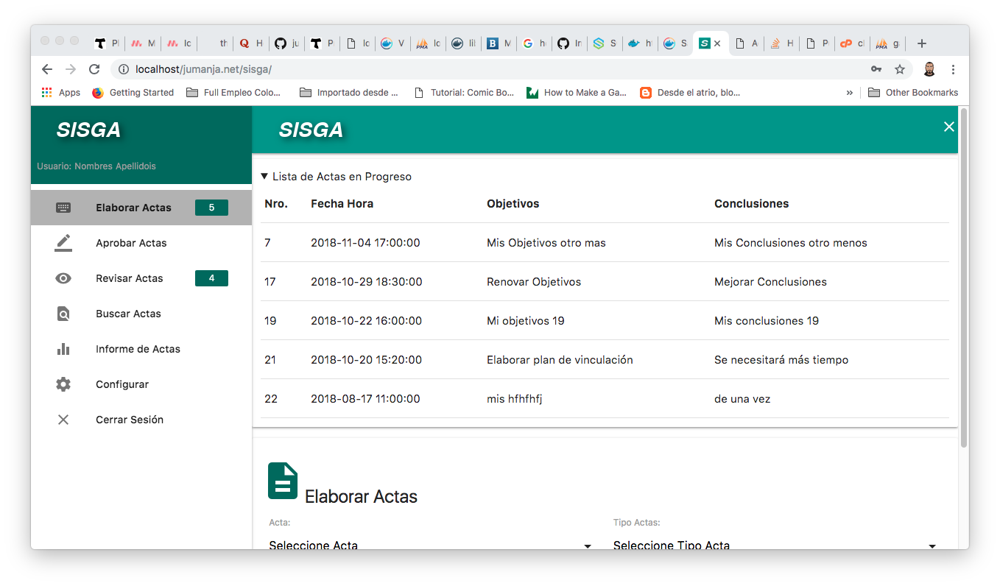
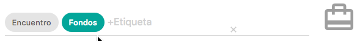
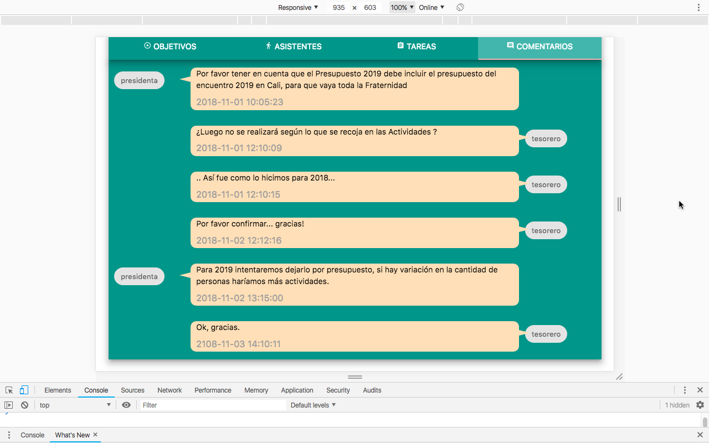
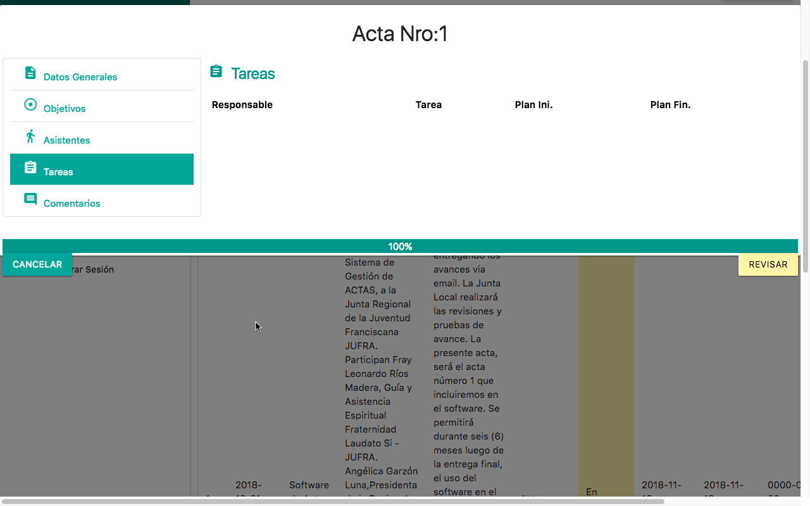

A continuación detallaremos el resto de funcionalidades del sistema.
Algunas opciones poseen contadores a su lado, que indican cuántos registros cumplen la condición preestablecida, por ejemplo, Elaborar actas muestra la cantidad de Actas en Progreso (solo está permitido a la Secretaría crear o modificar las actas en progreso), Actas por Aprobar muestra la cantidad de actas en estado preliminar (es decir, las actas que están esperando aprobación) que el usuario con sesión activa tiene, etc… En la siguiente imagen se puede notar estos contadores, (5 Actas por Elaborar, 4 Actas por revisar) pero recuerde que la cantidad varía según los registros y el usuario que esté logueado:

Esta opción es de uso de la persona que preste el servicio de Secretaría.
Haciendo click en la parte superior de esa opción, en “Lista de Actas en Progreso” se puede ver las actas en las que se está trabajando a título de borrador, es decir, con estado “En Progreso”.
Estas actas en Progreso aparecerán también haciendo click en “Seleccione Acta”, para elegirlas si se quiere y poder actualizar su información (modificarlas o editarlas). También aparecerá de primera una opción que hay que seleccionar cuando se quiera crea un acta, se llama “agregar Acta nueva”.

Se podrá entonces ya sea crear o modificar un acta por parte de la Secretaría, Se podrá elegir Tipo de Acta, Escribir Tema Principal, Lugar de la Reunión:

… y usar los controles de fecha y de hora para elegir la Fecha y Hora de la reunión que originó el acta que se está elaborando (recuerde que decimos Elaborar ya sea cuando se está agregando un acta nueva o modificando una ya existente en el sistema). Haciendo click en el campo de fecha podrá elegirla seleccionando un día o usando las flechas para cambiar mes y año, luego el día. Termina con click en OK:

Similarmente, haciendo click en la hora aparecerá el control de la Hora, se selecciona primero la hora, luego los minutos, y por luego a la izquierda activar AM o PM. Termina con click en OK:

Debajo de la fecha y hora del acta, hay un campo de Etiquetas, en las que se pueden agregar palabras clave que permitirán más adelante buscar o ubicar actas con temas similares. Aquí se ingresarán las etiquetas que puede configurar la Secretaría en la opción Configurar, seleccionando “Etiquetas”. Para ingresarlas simplemente empiece a escribir ubicados en el campo etiquetas, y el sistema empezará a mostrar las etiquetas que contienen esas letras para que el usuario elija la que busca usando la tecla de flecha abajo y pulsando la tecla Enter, o haciendole click con el ratón. Ejemplo, el usuario quiere agregar la etiqueta Encuentro, empieza escribiendo :

.. el sistema le muestra que con la letra e, encontró dos etiquetas, “Encuentro” y “Retiro”. El usuario hace click en Encuentro (o tecla de flecha abajo y pulsa Enter) y así elige esa etiqueta, entonces el sistema ya muestra la etiqueta en el campo. Pero note que al lado de la etiqueta dice en gris: “+Etiquera” .. eso quiere deir que puede seguir agregando si lo desea, digamos que repite el proceso para buscar una etiqueta “Fondos” y que la selecciona, y ahora en pantalla el campo luce con dos etiquetas:

... igual puede seguir agregando las etiquetas que desee.
Para eliminar una etiqueta, simplemente selecciónela haciendo click, la etiqueta cambiará de color y use la tecla backspace (Retroceso) o Delete o (Supr según el teclado). Por ejemplo, el usuario quiere borrar la etiqueta “Fondos”. La selecciona haciéndole click y ésta cambiará de color así:
.. si pulsa cualquiera de las teclas mencionadas arriba (Backspace o Delete), eliminará la etiqueta.
En las siguientes pestañas haciendo click en el título, se habilitarán los campos correspondientes para ingresar o modificar la información. Los analizaremos de izquierda a derecha per el usuario es libre de seleccionar el que necesite o trabajarlos en el orden que los requiera, al igual que en cualquier momento volver a subir o bajar a cambiar cualquiera de los campos del acta ya que está en pleno proceso de elaboración no hay orden obligatorio.
Iniciaremos pues, con la pestaña “Objetivos”:

En el campo Objetivos se deberían plasmar los puntos clave de la reunión.
En el campo Desarrollo se puede redactar un breve esumen del paso a paso o forma en que se desarrolló la reunión.
En el campo Conclusiones, se deberían plasmar los puntos decididos en la reunión, y cualquier comentario que se desee dejar en el acta. Ámbos con campos de texto libre, multilíneas.
Luego miremos la pestaña “Asistentes”:

Se muestra una convención, para que se pueda diferenciar si un integrante Asistió a la reunión, si No asistió, y (cuando un asistente haya aprobado el acta), si el asistente aprobós el acta.
Luego la pestaña “Tareas”:

Haciendo click en “Seleccione Responsable”, aquí aparecerá la lista de los integrantes para elegir, luego podrá ingresar mediante controles de fecha, las Fechas de Inicio Planeado y de Final Planeado de la Tarea, actividad o compromiso, y tiene también un campo de texto libre par describir brevemente la tarea. Finalmente haciendo click en Agregar, le aparecerá en la parte de abajo la tarea adicionada. Note que en la parte izquierda de la primera columna, aparece una pequeña equis (X), por si desea eliminar esta tarea. Solo se premite modificar la descripción de la tarea, si se requiere cambiar las fechas o el responsable elegido, deberá borrar la tarea e ingresarla nuevamente con la información correcta.
La pestaña más a la derecha es la pestaña de “Comentarios”:
… en donde aparecerán los comentarios agregados por el resto de la Junta Local, la imagen muestra texto ficticio con los integrantes que hicieron los comentarios, fecha y hora del comentario y su texto. Cabe recordar que en los requerimientos se especificó que la Secretaría no adiciona los comentarios al acta, solo los lee. Más adelante se explicará y detallará la forma en que los otros integrantes pueden hacer comentarios a las actas “Preliminares”.
Luego de las Pestañas, los tres campos que aparecen son la Fecha, la Hora, y el Lugar de la Siguiente Reunión, haciendo click en ellos, respectivamente aparecerá cuadro control de Fecha, cuadro control de Hora y Selección de Lugar, de la misma forma en que previamente se describieron los campos de Fecha, Hora y Lugar de Reunión del Acta.
Finalmente, aparecerán las opciones de “Guardar en Progreso”, “Guardar Preliminar”, y "Retirar Acta" mediante estos botones:

GUARDAR EN PROGRESO, significa simplemente almacenar en la base de datos el acta. Cuantas veces se quiera, se puede volver a la opción “Elaborar Actas”, elegir esta acta, y modificar lo que queramos, siempre y cuando se siga guardando “En Progreso” pues es un estado especie de Borrador del Acta. Al momento de guardar, aparecerá el menaje de “Se guardó Ok” ya descrito previamente.
GUARDAR PRELIMINAR, implica una responsabilidad adicional, puesto que además de guardar estos cambios en la base de datos, el estado de esta acta cambiará a “Preliminar”, lo que implica que el sistema enviará una Notificación vía correo electrónico a cada Asistente, indicando que ya pueden entrar a revisar (y posiblemente a Aprobar esta acta). Es por ello que si se pulsa este botón, aparecerá una confirmación Adicional para comprobar si quiere continuar con el cambio de estado:

Haciendo click en CANCELAR regresa a la Elaboración de Actas para que el usuario pueda elegir Guardar en Progreso, o elegir un acta diferente o seleccionar otra opción, perdiendo los cambios realizados. Haciendo click en GUARDAR, se procederá a guardar el acta en estado Preliminar, pero en esta versión aún no está terminada la generación de notificaciones explicadas anteriormente.
RETIRAR ACTA, También confirmará si en realidad desea Retirar el acta, pues esta acción impedirá que el acta llegue a ser aprobada.

Esta opción permite al usuario realizar búsquedas básicas y avanzadas dentro de las actas existentes en la base de datos, mediante diferentes criterios, al abrirla el sistema muestra una pantalla similar a ésta:

En donde aparecerán una tabla con las actas disponibles para que el usuario aplique filtros básicos o búsqueda avanzada según lo requiera. Los campos de la parte superior de la tabla y los votones Ver todo y Refrescar, funcionan de la misma forma explicada anteriormente en las Tablas, lo mismo que al hacer click en el encabezado de las columnas se ordena ascendente o descendentemente los registros.
El componente nuevo en esta pantalla es el botón “Búsqueda Avanzada”. Al pulsarlo, aparecerá un panel de elección de parámetros a aplicar, como aparece en la siguiente imagen:

Que permite aplicar filtros adicionales específicos para las actas:
Cambiando éstos valores, el número de Registros cambiará, para cerrar este panel, simplemente hay que seleccionar la tabla (parte sombreada en gris en la imagen anterior).
Nota 1: Cada vez que se cambie un valor en el panel, la tabla se refrescará cuando el usuario haga click por fuera de ese campo o click enn otro campo, por eso no hay botón de buscar o enviar, cada vez que salga de uno de los campos (y haya cambiado su valor) se aplicará ese criterio de búsqueda.
Nota 2: No siempre se afectará la cantidad de registros recuperados, depende de los criterios elegidos y la información de las actas en la base de datos.
Nota 3: Recuerde que siempre se puede usar el botón “Refrescar”, para recuperar los parámetros de búsqueda iniciales, es como si el usuario fuese a una opción diferente del menú lateral, y volviera a entrar a “Buscar Actas”.
Haciendo click en un acta que esté APROBADA, dentro de las opciones que poseen Búsqueda Avanzada, podrá generar un archivo PDF del acta. Al hacer click en cualquier campo de la fila, aparecerá la información del acta, y un botó a la derecha para generar en PDF, al pulsarlo, luego de unos segundos se descargará un archivo PDF con los datos del acta. El usuario podrá entonces enviarlo, guardarlo o imprimirlo según se requiera.
Esta opción permite visualizar el porcentaje de ejecución de la gestión de actas, aparecerá una pantalla similar a ésta:

En donde se pueden apreciar la cantidad de Actas por Estado, para este ejemplo tenemos:
| En Progreso | Preliminares | Aprobadas | Retiradas | % Ejecución |
|---|---|---|---|---|
| 6 | 4 | 7 | 41% |
El porcentaje de Ejecución para este ejemplo es calculado usando la siguiente fórmula:
((En Progreso + Preliminares + Aprobadas + Retiradas ) / (Aprobadas + Retiradas)) * 100
Que nos da (para este ejemplo), 41% de Ejecución. Es decir, Las Actas en Progreso deberían pasar en algún momento a Preliminar. Las Preliminares deberían en algún momento pasar a Aprobadas. En cualquiera de los estados alguna de las actás podría necesitarse que pase a Retiradas (por algún error de digitación doble de actas, o definitivamente no se requiere esa acta pero por auditoría el consecutivo ya no se podría utilizar). Por lo tanto, diríamos que solo el 41% de actas está terminada (ya sean aprobadas o retiradas), solo si no tenemos actas en progreso ni preliminar saldría 100.
En la parte de abajo, se ofrece el botón de Búsqueda Avanzada (funciona tal cual se explicó anteriormente), con la variante, de que en esta opción Informe de Actas, está permanentemente bloqueado en el estado “Aprobadas”, pues sería la opción que verían los invitados como Regional / Nacional, etc…
Revisar Acta permite consultar alguna de las actas haciendo click en cualquier campo de su fila, se abrirá el acta y haciendo click a la izquierda podrá verse los datos generales, objetivos, tareas, comentarios. Si el acta está en estado PRELIMINAR, y NO es usuario de secretaría, podrá agregar comentario en la pestaña comentarios, y luego hacer click en el botón REVISAR. El estado cambiará a EN PROGRESO.
Aprobar Acta permite consultar alguna de las actas haciendo click en cualquier campo de su fila, se abrirá el acta y haciendo click a la izquierda podrá verse los datos generales, objetivos, tareas, comentarios. Luego podrá hacer click en el botón APROBAR, y si es el último Integrante (que faltaba por aprobar), se cambiará el estado a APROBADA, y se generará email a todos los integrantes.
Para cerrar adecuadamente la sesión en SISGA, elija la opción “Cerrar Sesión”.